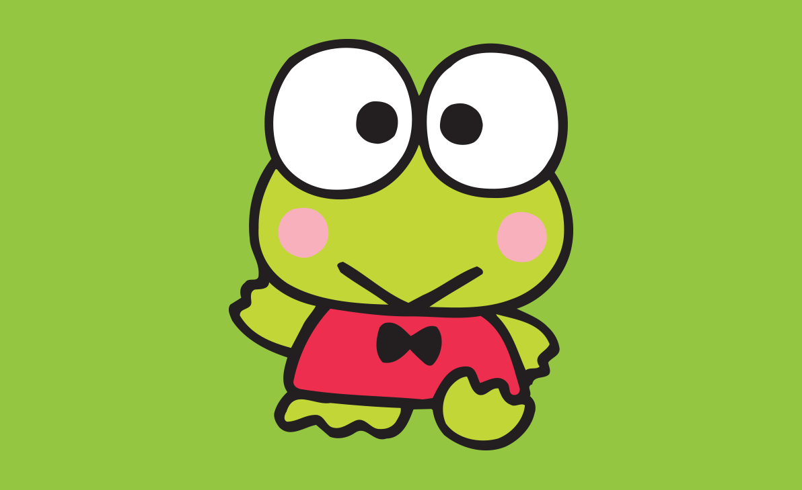
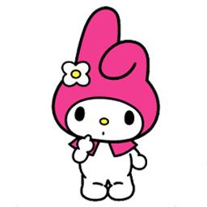
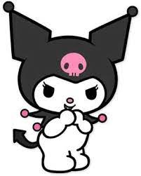

Bienvenidos amantes de Hello Kitty aqui encontraras todo lo que necesites desde:
- Imagenes
- Videos
- Accesorios
- Ropa
- Juguetes
Hello Kitty es una gatita feliz y divertida, le encanta llevar la ternura por donde va. Ella vive con sus papás y su gemela Mimmy, en Londres. Para ella nunca está de más tener muchos amigos.
¿Quienes son los amigos de Kitty?
| Nombre | Descripción | foto |
|---|---|---|
| Badtz-Maru | Se trata de un pingüino macho amigo de Hello Kitty que nació en Oahu, Hawái, el 1 de abril de 1993, y que actualmente vive en la tierra inventada de Gorgeous Town, junto a sus padres y hermanos. |  |
| Chococat | Se trata de un dulce gato negro con enormes ojos negros, cuatro bigotes. Su nombre proviene de su nariz color chocolate. Sus bigotes pueden captar información como antenas, por lo que suele ser el primero en enterarse de las cosas. Chococat es un gato muy valiente al que le encanta jugar. |  |
| Keroppi | Es una rana feliz con una sonrisa en forma de V que ama el béisbol y vive en el estanque de donas. |  |
| My Melody | El primer personaje de un conejo lanzado por Sanrio. Ella es completamente blanca, aunque siempre usa una capucha roja o rosa y un adorno en el lado derecho de su cabeza, el cual suele ser una flor blanca o un moño. Su nariz es amarilla, sus ojos son negros y su oreja izquierda suele estar baja. |  |
| Kuromi | Es el rival de My Melody , que es un conejo blanco o una criatura parecida a un diablillo que lleva un sombrero de bufón negro con una calavera rosa en el frente y una cola de diablo negra. La expresión facial de la calavera cambia para coincidir con el estado de ánimo de Kuromi. Oportunamente, su cumpleaños es Halloween (31 de octubre) |  |
Aqui podras encontrar todos los capitulos que desees.